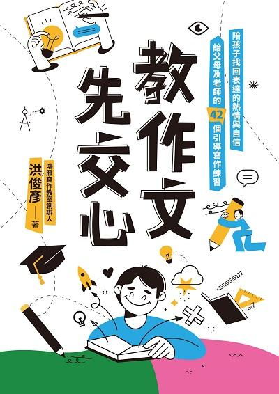
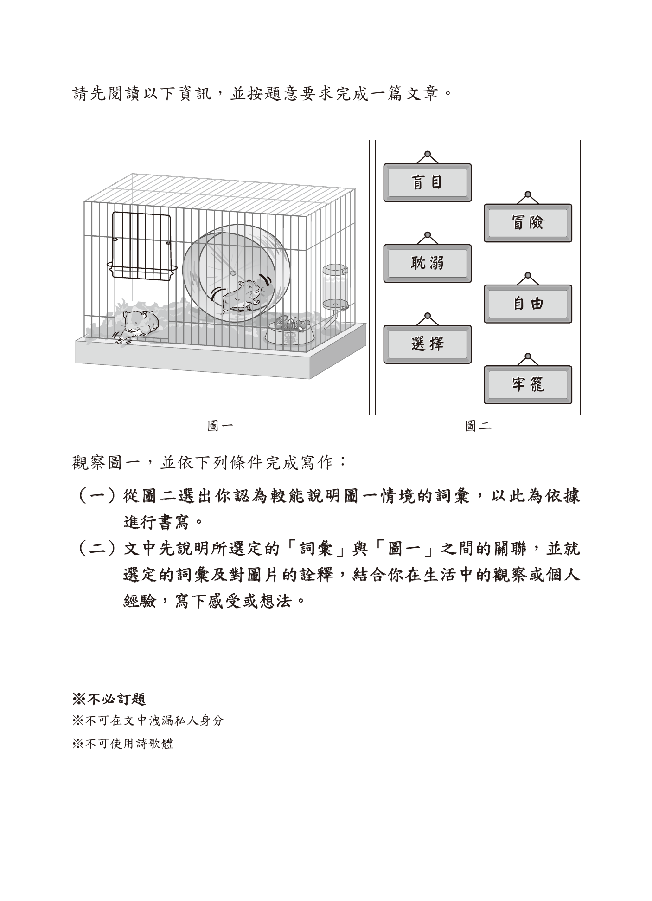
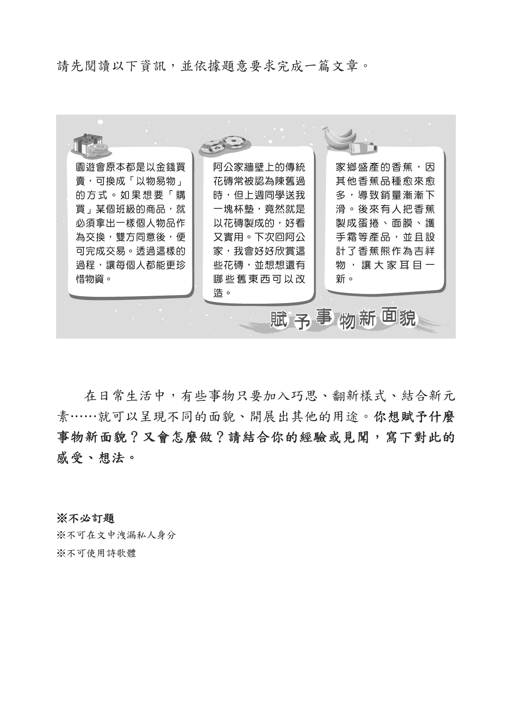

先問你一個問題
會不會停下來問「這有什麼用」？
寫作其實也一樣 ── 當你有話想說，寫作就會變成你的好幫手，而不是討厭的作業。
寫作，能為你做三件事
寫作是說話
有些話你說不出口，卻寫得出來。寫作，是把心裡的話好好說清楚。
寫作是力量
會表達的人，將來更容易說服別人、被別人聽見 ── 這是 AI 也搶不走的能力。
寫作是看見世界
同一個畫面，每個人注意到的細節都不一樣。寫作，是把你看見的世界交給讀者。
接下來七堂課，我們一起把寫作變成一件「有話想說」的事。
先看看會考作文怎麼考
從產品文案、社群標題、報章雜誌標題中，觀察標題怎麼設計、反映什麼現象。
看圖一與圖二，選一個詞彙來說明情境，再連結自己的生活觀察或經驗。
從日常事物出發，思考它如何翻新樣式、結合新元素，呈現新的面貌。
觀察標題設計，寫出自己的看法

先看圖，再選詞，再寫感受

從生活物品，看見新的可能

今天先練一件事：把描述變多
看見
人、物、地點、動作、光線、聲音。
選擇
挑最重要的三個細節，不用全部塞進去。
放大
從「我看到教室」變成「我看到雨後的教室」。
我們的七堂課地圖
這七堂課，我們會先學會「看見更多」，再一步一步把「話寫清楚」。每一堂都會自己寫一篇文章！
安靜觀察 ・ 寫出畫面
壞人真的全壞嗎？替反派平反
不靠成語，也能寫得很好
用五感，把讀者拉進現場
先擺地攤再挑貨 ・ 訂小標
三種讓人想看下去的開頭
寫一份能說服大人的企劃書
看別人怎麼寫，再寫自己的
因為我有話要說
安靜觀察 ・ 景物描寫「寫作文有什麼用？」其實是假議題
寫作，先從一句「看得見」開始
物品
不是「桌上有東西」，而是「桌角有一本攤開的筆記本」。
位置
不是「書包在那裡」，而是「書包靠在椅腳旁，拉鍊半開」。
動作
不是「下雨了」，而是「雨水沿著窗框一滴一滴往下滑」。
一句話怎麼變大？先把它看清楚
先不要討論，自己慢慢看

桌上有什麼？它們的位置、顏色、狀態是什麼？
教室、走廊、雨傘、積水，哪一個最吸引你？
窗外的光、樹、遠方學生，讓畫面變成什麼氣氛？
如果你站在那裡，會覺得安靜、期待、孤單，還是放鬆？
不是寫更多字，是寫得更看得見
桌上很亂。
桌角攤著一本沒闔上的筆記本，藍色鉛筆盒斜斜壓在紙邊。
走廊很濕。
走廊地板留著一塊塊水痕，窗外的光被踩成碎碎的亮片。
我很緊張。
我一直捏著書包背帶，手心黏黏的，連拉鍊聲都覺得太大。
太短的版本：有看到，但還不夠清楚
雨後的教室
放學後，走廊很安靜。地上有水，窗外有樹，教室裡有桌椅。我覺得這個地方很漂亮，也有一點孤單。
點一下問題，翻出可以直接學的句子
誰還沒有回來？為什麼那個人值得等？
我站在門口等了很久，直到走廊的水光慢慢暗下來，那個人還是沒有回來。
被留下的東西，會不會代表一件重要的事？
桌上的筆記本沒有闔上，像主人只是離開一下，卻把一個下午留在原位。
這個地方是不是某個人最後一次經過？
我回頭看那間教室，知道明天開始，它就只是我曾經待過的地方。
雨停之後，有沒有什麼心情也慢慢亮起來？
雨停以後，地板還是濕的，但窗外的光已經先替新的一天鋪好路。
完整的版本：讓讀者真的站進畫面
雨後的教室
雨停後，走廊沒有立刻恢復熱鬧。地板上還有水，水裡映著窗框和樹。幾把雨傘靠在牆邊，像被留下來值班。
教室門開著。一本筆記本攤在靠門的桌上，鉛筆盒壓住紙角。這些東西都很普通，可是它們說明一件事：人剛走，聲音也剛走。
遠處幾個學生走向校門，腳步很輕。我站在門邊，看著走廊慢慢變暗。那一刻我明白，安靜不是什麼都沒有。安靜是剛剛發生過的事，還留在原來的位置。
寫作任務：像會考一樣看圖寫作

題目：典禮結束以後
左圖是一處國小畢業典禮結束後的場景。請根據圖片內容，寫一篇短文。
- 可以先描寫你看見的景物，例如椅子、舞台、麥克風、花束、光線。
- 再想像一個剛離開或還沒離開的人，寫出他當時的心情。
- 文章不必逐項介紹圖片，但要讓讀者知道：典禮結束後，某個人心裡發生了什麼變化。
反派有話要說
壞人真的全壞嗎？替反派平反平反不是洗白，是把「為什麼」補完整
先承認
他確實做錯了什麼，不替錯事找藉口。
再追問
他為什麼會走到這一步？壓力在哪裡？
補心聲
把反派說不出口的害怕、羨慕或孤單寫出來。
給出路
想一個不傷人的做法，讓故事有轉圜。
選一則你最想替他說話的反派
她阻止灰姑娘去舞會，把家事丟給她做。
她可能怕兩個女兒沒有未來，也怕自己再次失去依靠。
牠吹倒房子，想闖進小豬家。
牠可能飢餓、被趕出森林，或只懂用力氣解決問題。
她嫉妒白雪公主，甚至想害她。
她可能害怕變老、失去地位，也從來沒被教過怎麼愛自己。
牠欺騙小紅帽，闖進外婆家。
牠可能一直被人類當成危險動物，只學會先攻擊。
等一下你只要選一則，替那個反派寫一段自白。
《灰姑娘》：後母真的只是不喜歡她嗎？
灰姑娘的媽媽過世後，爸爸再婚，後母帶著兩個女兒住進家裡。後母把洗衣、掃地、煮飯都交給灰姑娘，讓她睡在灰燼旁。
王子舉辦舞會時，灰姑娘也想去。後母卻說她不配，還帶著兩個女兒先走。灰姑娘後來靠仙女的幫助進了皇宮，王子最後用水晶鞋找到了她。
偏心、欺負灰姑娘、阻止她去舞會。
她帶著兩個女兒改嫁，沒有安全感，怕女兒輸給灰姑娘，也怕失去生活依靠。
承認她做錯，但寫出她其實是被恐懼推著走。
《三隻小豬》：大野狼為什麼一直追？
三隻小豬離家後，分別蓋了稻草屋、木頭屋和磚頭屋。大野狼來到稻草屋前，要求小豬開門。小豬不肯，牠就用力一吹，把房子吹倒。
牠又追到木頭屋，還是用同樣的方法把房子吹壞。最後牠來到磚頭屋，怎麼吹都吹不倒，甚至想從煙囪爬進去，卻掉進熱鍋裡逃走了。
破壞別人的家、威脅小豬、只想吃掉別人。
森林變小、食物不夠，牠又沒有人教牠怎麼求助，只會用可怕的方式靠近別人。
寫出牠的飢餓和笨拙，但也讓牠學會道歉或交換食物。
《白雪公主》：皇后為什麼害怕鏡子？
皇后每天問魔鏡：「誰是世界上最美的人？」很長一段時間，鏡子都回答是她。可是有一天，鏡子說白雪公主比她更美。
皇后聽了又怕又氣，命人把白雪公主帶到森林。白雪公主逃過一劫，住進七個小矮人的家。皇后卻仍不放手，最後假扮成老婆婆，把毒蘋果交給她。
嫉妒、殘忍、為了美貌傷害白雪公主。
她把價值都放在外表上，害怕變老、被取代，也沒有人告訴她：不被鏡子稱讚，仍然值得被愛。
寫出她被比較困住，但讓她學會放下鏡子的答案。
《小紅帽》：大野狼只會欺騙嗎？
小紅帽帶著點心去看外婆，在森林裡遇見大野狼。大野狼問出外婆家的位置，先跑到外婆家，假裝成外婆等小紅帽來。
小紅帽發現「外婆」的耳朵、眼睛、嘴巴都變得很奇怪，這才知道自己被騙了。故事裡，大野狼總是被說成狡猾又危險的壞蛋。
欺騙小紅帽、闖進外婆家、利用別人的信任。
牠也許長年被獵人追趕，從來沒被人相信過，所以以為只有偽裝才能靠近人類。
寫出牠渴望被聽見，但必須承認欺騙讓別人更害怕牠。
替反派問四個問題
- 他做錯了什麼？先不要把錯事拿掉。
- 他最害怕失去什麼？安全、家人、食物、地位，還是被愛？
- 他真正想說卻說不出口的話是什麼？
- 如果重來一次，他可以怎麼做，才不會傷害別人？
〈後母的日記〉
後母的日記
沒有人問過我，為什麼。
我嫁進這個家的時候，已經帶著兩個女兒。孩子的爸爸答應會照顧我們，可是他成天在外面，家裡的一切都落在我身上。
灰姑娘長得漂亮又溫柔，村子裡的人都疼她。可是我心裡很慌 ── 在這個女人不能工作、沒有錢的年代，如果我的兩個女兒嫁不出去，將來我們三個只能流落街頭。
我承認，我對灰姑娘太嚴厲了。我不讓她去舞會，不是因為我恨她，而是因為我怕。我怕我的女兒比不過她，怕我們的明天沒有著落。
如果可以重來，我會把灰姑娘也當成自己的女兒，帶著三個孩子一起去舞會。也許這樣，我就不會變成童話裡那個人人討厭的壞後母了。
寫作任務：〈反派有話要說〉
從今天四則故事選一個反派，幫他寫一段自白。你可以替他說話，但不能假裝他沒做錯。
- 他做了什麼「壞事」？（先照原版說一遍）
- 他的苦衷／壓力／害怕是什麼？（替他說出心裡話）
- 給他一個更好的做法，翻轉結局。
挑戰：讓讀者讀完後，不一定原諒他，但能理解他。→ 工作本第 2 課。
把話寫清楚
不靠成語，也能寫得很好「我媽說要多用成語……」
寫作真正的重點，是把你想說的事，清清楚楚地傳給讀者。成語可以有，但永遠排在「寫清楚」後面。
讓文章變深的，是「連接詞」
一句一句之間，用對連接詞，想法就有了層次 ── 這比硬塞成語有用多了：
因果
因為…所以…
之所以…是因為…
轉折
雖然…但是…
本來…沒想到…
遞進
不但…而且…
甚至…更…
〈一把傘〉
那天放學突然下大雨，我沒帶傘，只能站在騎樓下等。
因為雨越下越大，所以我開始擔心媽媽會在校門口等很久。就在這時候，隔壁班一個我幾乎沒講過話的同學走過來，把傘遞給我，說他家就在附近。雖然我們不熟，但是他什麼都沒多問，就把傘塞到我手上。
我撐著那把藍色的傘走回家，傘面被雨打得啪啪響。我本來以為這只是一件小事，後來卻一直記得。原來幫助別人不一定要認識很久，有時候只是剛好你有傘，而對方正淋著雨而已。
寫作任務：〈一件讓我有感覺的小事〉
這篇規則特別：不准用成語，但至少用上 3 種連接詞。
- 發生了什麼？把時間、地點、人交代清楚。
- 我為什麼有感覺？用「因為…所以…」說明。
- 「雖然…但是…」：寫一個轉折或意外。
寫完和同學互相圈出對方用得好的連接詞。→ 工作本第 3 課。
寫出畫面感
用五感，把讀者拉進現場畫面感，不是靠華麗的詞
一轉頭便嚇得目瞪口呆 ── 那是一隻蟑螂爬行的聲音。」
五感 ＋ 身體反應
👁 看到
巨大、跟茶杯一樣大、閃爍的紅燈…
👂 聽到
滋滋、啪啪、自己的心跳…
✋ 摸到
冰冷的金屬、黏黏的汗…
👃 聞到
霉味、雨後的泥土味…
👅 嚐到
嘴裡發乾、苦苦的…
💓 身體
腿軟、起雞皮疙瘩、發抖…
〈電梯停電那一分鐘〉
電梯停電那一分鐘
我最怕黑。那天我一個人搭電梯回家，電梯到一半，燈突然全暗了。
我看不見任何東西，只看到樓層數字停在一個閃爍的紅色「4」。我聽到電梯裡「嗡」的一聲，接著就是我自己越來越大聲的心跳。我伸手去摸牆壁，金屬板冰冰涼涼的，黏著我手心的汗。我想喊救命，喉嚨卻乾得發不出聲音。
那一分鐘，像一個小時那麼長。後來燈亮了，電梯慢慢往下移動，門打開的瞬間，我衝出去，腿軟得差點跪下來。
現在我每次搭電梯，手都會偷偷按著牆壁 ── 好像這樣，黑暗就不會再突然把我吞掉。
寫作任務：〈我的恐懼〉
寫一次你真正害怕的經驗（怕蟲、怕黑、怕上台、怕被罵…）。
- 那一刻我看到／聽到／摸到什麼？（至少兩種感官）
- 我的身體有什麼反應？
- 後來怎麼結束？現在回想還會怎樣？
挑戰：讓讀者讀到一半，緊張到不敢往下看。→ 工作本第 4 課。
文章的骨架
先擺地攤再挑貨 ・ 訂小標先別管「到底要寫幾段」
段落怎麼分？
不是規定幾段，而是「一個重點一段」。重點換了，就換段。
用 3W 抓主旨
寫什麼、為什麼寫、想讓讀者覺得怎樣 ── 抓住它，就不會離題。
替每一段「訂一個小標」
下一個有趣的小標題，主題立刻清楚，讀者也更想看。以〈我的校園〉為例：
一、會漏水的天才走廊
二、最兇也最好笑的教官
三、永遠搶不到的福利社布丁
寫遊記也一樣
① 列出印象深的行程 ② 挑幾個寫成小段 ③ 各下一個小標 ④ 排順序 ⑤ 最後補開頭
〈我的學校，怪怪的可愛〉
我的學校，怪怪的可愛
我的學校不大，但每個角落都有故事。
一、會漏水的天才走廊
每到下雨天，三樓走廊一定積水，我們都叫它「游泳池」。老師放了三個水桶接水，滴滴答答，像在打節拍。
二、最兇也最好笑的教官
教官講話超大聲，但他每天都偷偷在校門口幫遲到的同學擋雨，自己卻淋得一身濕。
三、永遠搶不到的福利社布丁
福利社的布丁每天只有二十個，下課鐘一響，全校像賽跑一樣衝過去。我到現在只搶到過一次。
這就是我的學校，怪怪的，卻是我每天都想回去的地方。
寫作任務：〈我的校園／一次出遊〉
用「擺地攤 → 挑貨 → 訂小標」組出一篇有 3～4 個小段的文章。
- 地攤：把想到的點子先全部寫在框框裡。
- 挑貨：圈出最精彩的 3～4 個。
- 小標：替每段下一個有趣的標題，再展開。
→ 工作本第 5 課（有「擺地攤」框 + 小標欄）。
抓住讀者
三種讓人想看下去的開頭開頭，決定別人要不要看下去
好消息是：第 5 堂把骨架搭好之後，開頭其實最好寫 ── 因為你已經知道整篇要去哪裡了。
同一個故事，三種開法
用第 4 堂的〈電梯停電那一分鐘〉示範：
① 倒敘法
「現在我每次搭電梯，手都會偷偷按著牆壁。這個習慣，是從那一次停電開始的。」
② 提問法
「你有沒有在電梯裡，突然陷入一片黑暗的經驗？我有，而且只有一分鐘，卻像一輩子。」
③ 畫面法
「燈『啪』地一聲全暗了。樓層數字停在一個閃爍的紅色『4』。」
同一篇〈段考前的書桌〉── 三種開頭
【倒敘版】考卷發下來的那一刻，我才後悔，前一晚不該一直整理那張根本沒在讀的書桌。
【提問版】你會不會也這樣？越是該讀書的時候，越想先把書桌整理得乾乾淨淨？那天段考前，我就是這樣。
【畫面版】橡皮擦排成一列，鉛筆按顏色站好，便利貼貼成一道彩虹 ── 而我的課本，還停在第一頁。
同一件事，三種開頭都把讀者「勾」住了，再接下去寫那晚的故事就好。
寫作任務：替舊文章換三種開頭
拿出第 4 或第 5 堂的文章，只重寫開頭，三種版本都試試：
- 倒敘版：把最後的感受搬到最前面。
- 提問版：用一個問題勾住讀者。
- 畫面版：用一個感官畫面開場。
三選一貼回原文，比比看哪個最吸引人。→ 工作本第 6 課。
說服與修改
寫一份能說服大人的企劃書把話「說進對方心裡」
先表明立場
用「一句話」說清楚你想要什麼，再慢慢說理由。
先懂對方
先說出大人在擔心什麼，再回應 ── 對方才覺得被理解。
企劃書四步 ＋ 修好離手
企劃書四步
① 我想要什麼 ② 為什麼（動機）③ 對大家有什麼好處 ④ 我願意付出什麼（配套）
改文章三件事
① 圈出錯字 ② 刪掉重複囉嗦的句子 ③ 把模糊的地方寫具體
〈請讓我養一隻狗〉
請讓我養一隻狗
親愛的爸爸媽媽，我想養一隻狗。
我知道你們最擔心的是「沒有人照顧」，所以我先想好了：每天早上六點半我自己起床遛牠，放學回家先餵牠、清理牠的窩，週末幫牠洗澡。這些我都寫進一張「責任表」，貼在冰箱上，沒做到就扣我一週的零用錢。
養狗不只是我想要而已，對全家都有好處。奶奶一個人在家會無聊，有狗陪她，她就不會整天看電視看到睡著；而我也能學會照顧另一個生命，不再只想著自己。
我不是一時衝動，這份企劃我想了三天才寫出來。如果你們願意給我一次機會，我會證明：我已經準備好，當一個負責任的主人了。
寫作任務：〈我想爭取的一件事〉
挑一件你真的想爭取的事（養寵物、改門禁、買某樣東西…），寫一份企劃書。
- 立場：用一句話說清楚你想要什麼。
- 理由＋好處：對你、對家人各有什麼好處？
- 配套：你願意負什麼責任？怎麼讓大人放心？
寫完先互相圈錯字，再唸出來「提案」給全班投票。→ 工作本第 7 課。
說進別人心裡
先把心打開，你就會有話想說；
有話想說，這些技巧才真正派得上用場。
七堂課完 ・ 願你找回寫作的熱情與自信